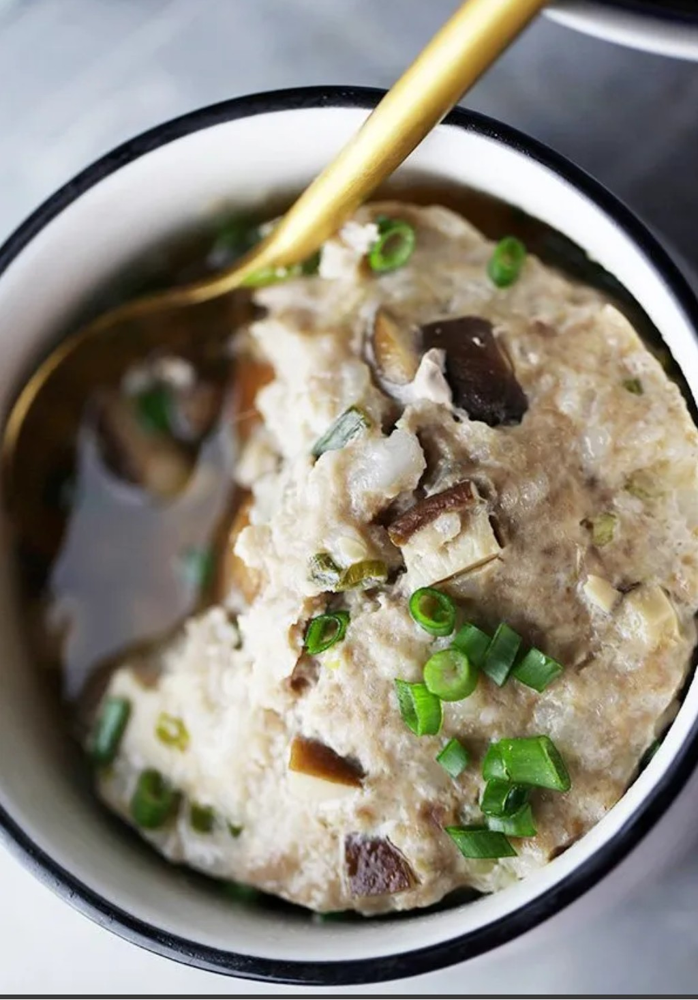

Steamed Pork with Mushrooms (香菇蒸肉饼)

Ingredients
Instructions
- Mix pork with soy sauce, oyster sauce, sugar, pepper, sesame oil, and cornstarch.
- Add water gradually and stir until sticky.
- Fold in mushrooms and green onion.
- Spread mixture into a shallow dish.
- Steam over medium heat for 12–15 minutes.
- Serve with rice and spoon the juices over top.